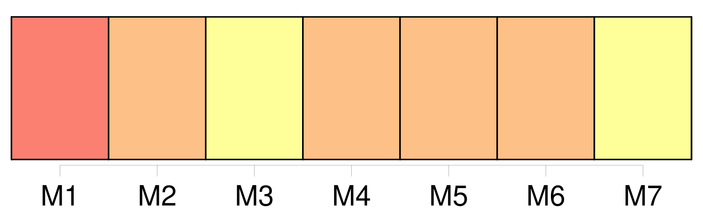
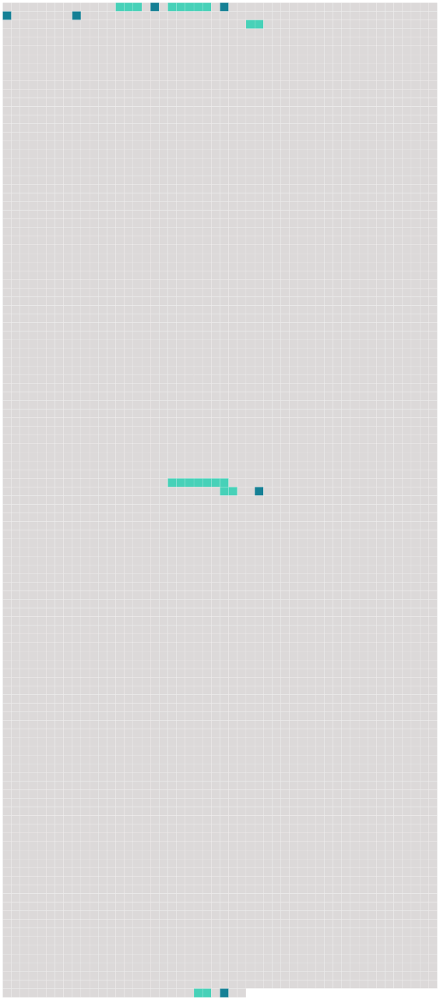

Longueur nb maillons : 12 mentions |
  |
Un aboi éraillé et enroué se fit entendre, et nous vîmes accourir [un vieux chien] [C’] était [le chien de mon prédécesseur] [Il] avait l’ œil terne, le poil gris et tous les symptômes de la plus haute vieillesse où puisse atteindre un chien. Je [le] flattai doucement de la main, et [il] se mit aussitôt à marcher à côté de moi avec un air de satisfaction inexprimable. [1 phrases]
Je lui répondis que je la garderais, elle et [le chien] , et aussi les poules, et tout le mobilier que son maître lui avait laissé à sa mort, ce qui la fit entrer dans un transport de joie, l’ abbé Sérapion lui ayant donné sur-le-champ le prix qu’ elle en voulait. [87 phrases] Quand je revins à moi, j’ étais couché sur mon lit, dans ma petite chambre du presbytère, et [le vieux chien de l’ ancien curé] léchait ma main allongée hors de la couverture. [1 phrases] En me voyant ouvrir les yeux, la vieille poussa un cri de joie, [le chien] jappa et [frétilla] de la queue ; mais j’ étais si faible, que je ne pus prononcer une seule parole ni faire aucun mouvement. [117 phrases]
Toutes les portes s’ ouvraient devant elle aussitôt qu’ elle les touchait, et nous passâmes devant [le chien] sans [l’] éveiller. |
 |
La ressource peut être téléchargée sur la page Ortolang
Si vous avez des questions ou vous voyez des erreurs, merci d'envoyer un mail à silvia.federzoni89@gmail.com
Site développé par S. Federzoni (contact)